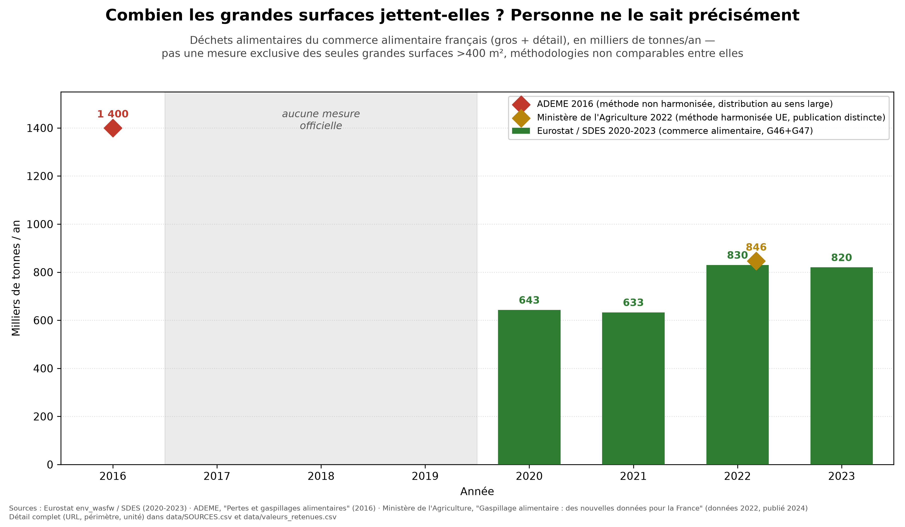
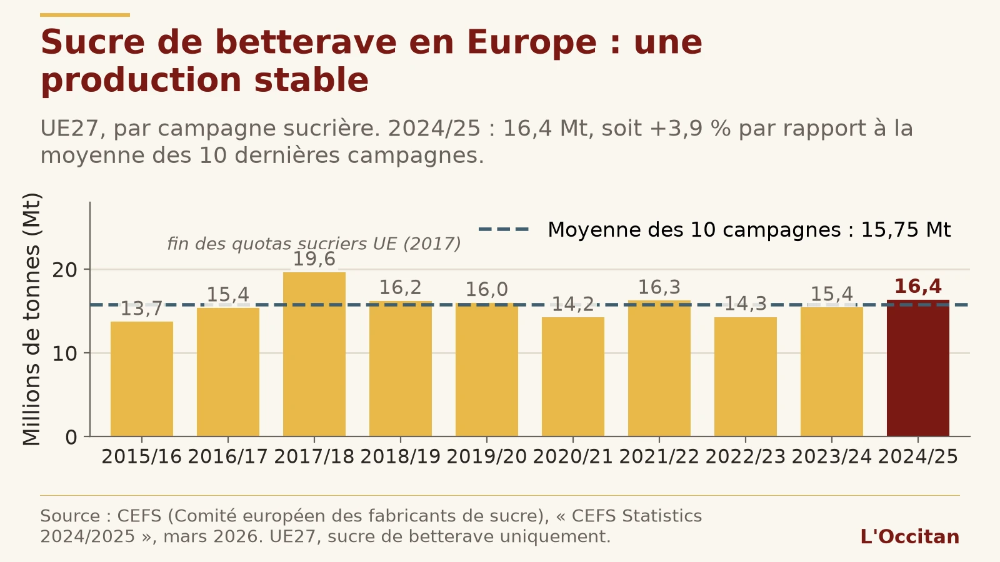

Grande distribution : ce que les chiffres montrent
Deux constats chiffrés sur l'agroalimentaire français
Juillet 2026 · mis à jour en octobre 2026
1. Le gaspillage alimentaire des grandes surfaces
Combien de nourriture les grandes surfaces françaises jettent-elles chaque année ? Personne ne le sait précisément. C'est le premier résultat de cette étude.
Ce qu'on sait : depuis 2020, une mesure harmonisée européenne existe. En 2023, le commerce alimentaire français (gros + détail) a généré 820 000 tonnes de déchets alimentaires, environ 2 200 tonnes par jour.
Tout n'était pas consommable, mais une partie de ces déchets était encore de la nourriture.
Évolution 2016-2023

Sources : Eurostat (env_wasfw) / SDES 2020-2023 · ADEME 2016 · Ministère de l'Agriculture (données 2022, publ. 2024)
Le vrai coût : tout ce qu'il a fallu pour rien
Et derrière chaque tonne jetée, c'est toute la chaîne en amont qui a été mobilisée pour rien : des terres cultivées, de l'eau, des engrais, du carburant, du travail, des animaux élevés, des émissions de gaz à effet de serre.
Dans la nature, rien ne se perd
Dans la nature, rien ne se perd. Ce qu'un être rejette en nourrit un autre ; les oiseaux, eux, ne produisent aucun déchet.
Nous nous croyons l'espèce la plus intelligente. Mais une espèce vraiment intelligente jetterait-elle 820 000 tonnes de nourriture par an, sans même savoir les compter ?
2. Betterave sucrière : ils se sont trompés d'urgence
On nous parle d'urgence pour sauver la filière betterave. Les chiffres racontent autre chose.
Sur les dix dernières campagnes, l'Union européenne a produit en moyenne 15,75 millions de tonnes de sucre de betterave par an. En 2024/25 : 16,4 millions de tonnes, soit 3,9 % au-dessus de cette moyenne.

Source : CEFS (Comité européen des fabricants de sucre), « CEFS Statistics 2024/2025 », mars 2026
Des pesticides interdits qui reviennent
C'est pourtant au nom de la betterave, entre autres, que des pesticides interdits reviennent. La loi d'urgence agricole, validée par le Conseil constitutionnel le 14 août 2026, permet de déroger à l'interdiction des semences de betterave traitées au flupyradifurone.
En 2025, plus de deux millions de personnes avaient signé la pétition contre la loi Duplomb sur le site de l'Assemblée nationale, un record. Un an plus tard, des pesticides interdits reviennent quand même.
Et le Conseil constitutionnel l'écrit lui-même dans sa décision. Ces produits « ont des incidences sur la biodiversité, en particulier pour les insectes pollinisateurs et les oiseaux, ainsi que des conséquences sur la qualité de l'eau et des sols et induisent des risques pour la santé humaine ».
Il confirme aussi l'objectif de la loi : prémunir ces filières « de distorsions de concurrence au niveau européen ».
« La betterave ne fleurit pas » : c'est faux
Leur argument, c'est souvent : « La betterave ne fleurit pas, donc les abeilles ne risquent rien. » C'est faux.
Les pesticides ne restent pas dans le champ. L'expertise scientifique INRAE-Ifremer (2022) constate « une contamination avérée de l'ensemble des milieux (terrestre, aquatique, atmosphérique) ». On les retrouve dans les petits cours d'eau, dans les eaux en aval des cultures, jusque dans l'eau de pluie. Et dans les bordures de champs, là où les abeilles butinent.
Et ce sucre, où va-t-il ?
Selon FranceAgriMer, en 2024/25, 21 % des betteraves françaises deviennent de l'alcool ou de l'éthanol. Le sucre est vendu à 38 % en France… et à 41 % à l'étranger. Quant au sucre en paquet acheté en grande surface, il ne représente qu'environ 9 % du sucre utilisé en France.
Sources
Gaspillage alimentaire des grandes surfaces
- Eurostat (env_wasfw) - Statistiques déchets alimentaires par activité économique
- SDES - Données 2020-2023, commerce alimentaire français
- ADEME - Données 2016, gaspillage alimentaire en France
- Ministère de l'Agriculture - Données 2022, publication 2024
Betterave sucrière et pesticides
- CEFS - Comité européen des fabricants de sucre, « CEFS Statistics 2024/2025 », mars 2026, p. 16 (production UE27 de sucre de betterave)
- Conseil constitutionnel - Décision n° 2026-914 DC du 14 août 2026, loi d'urgence pour la protection et la souveraineté agricoles (§ 52, 55, 56)
- INRAE / Ifremer - Expertise scientifique collective « Impacts des produits phytopharmaceutiques sur la biodiversité et les services écosystémiques », synthèse, mai 2022 (p. 87 et 109 du PDF)
- FranceAgriMer - Fiche filière sucre 2026, campagne 2024/25 (débouchés des betteraves et du sucre français)
- LCP - La pétition contre la loi Duplomb dépasse les deux millions de signatures (juillet 2025)